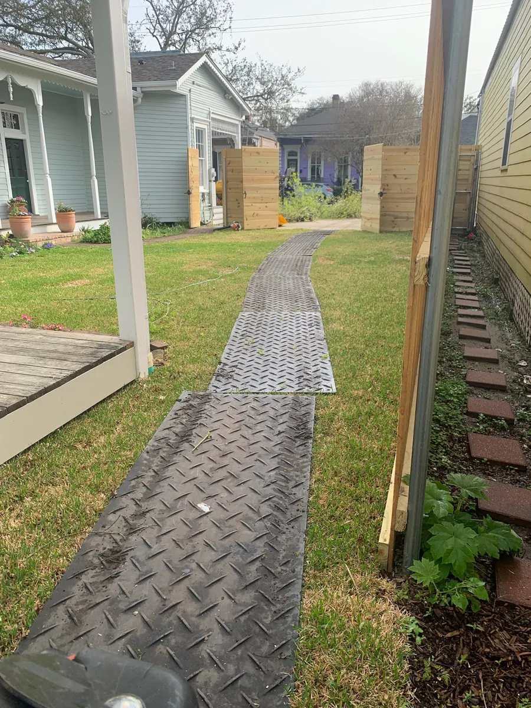
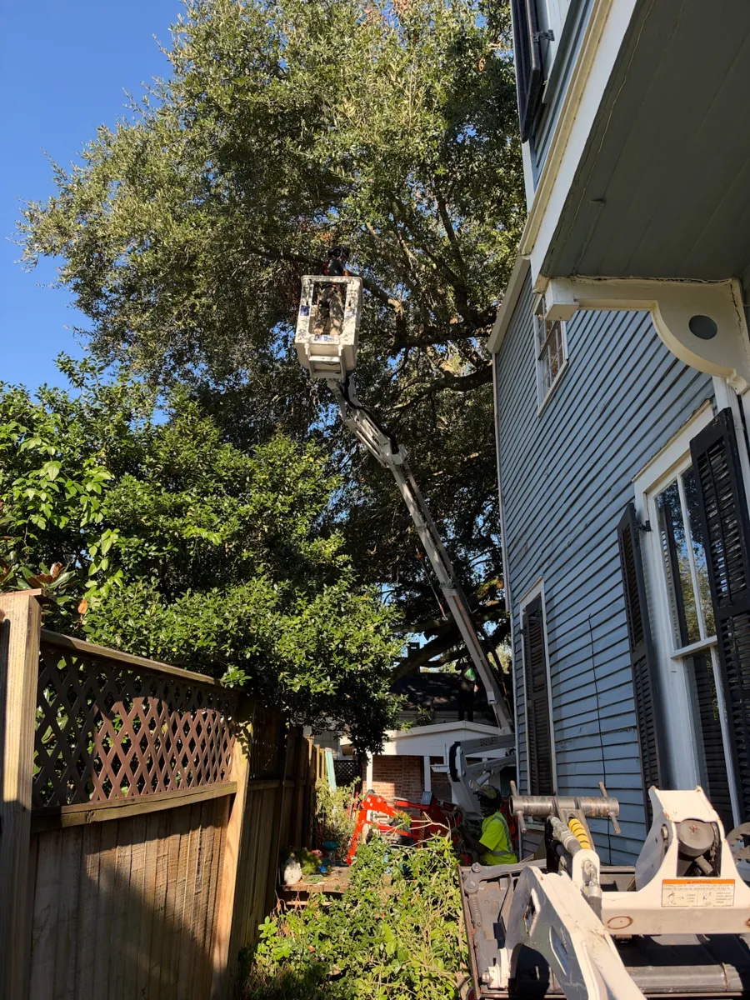
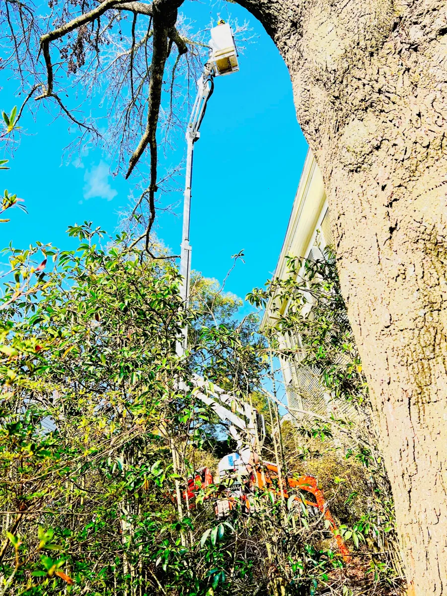
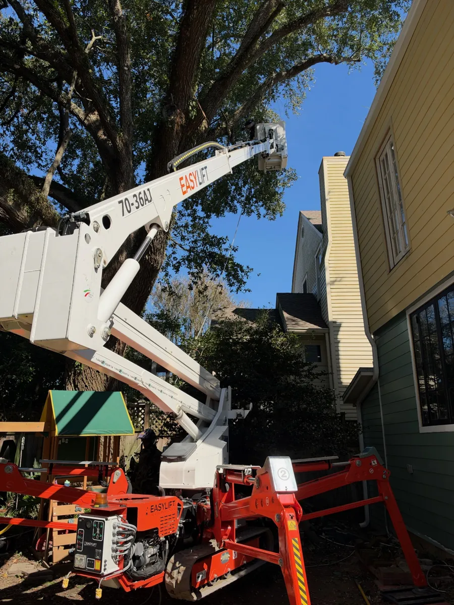
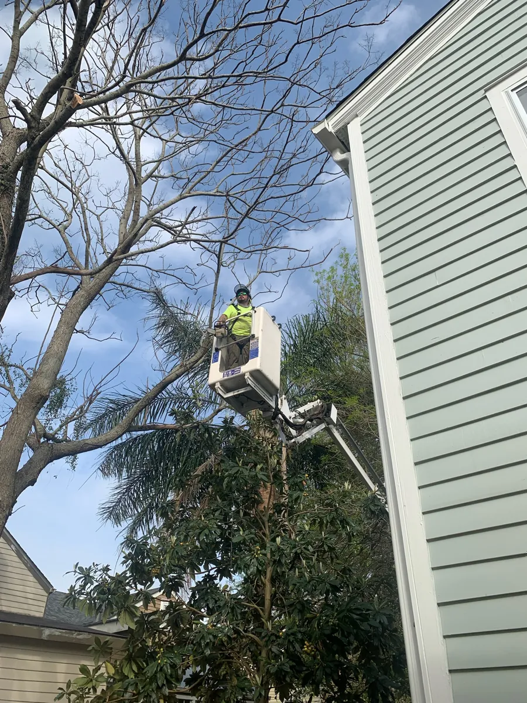
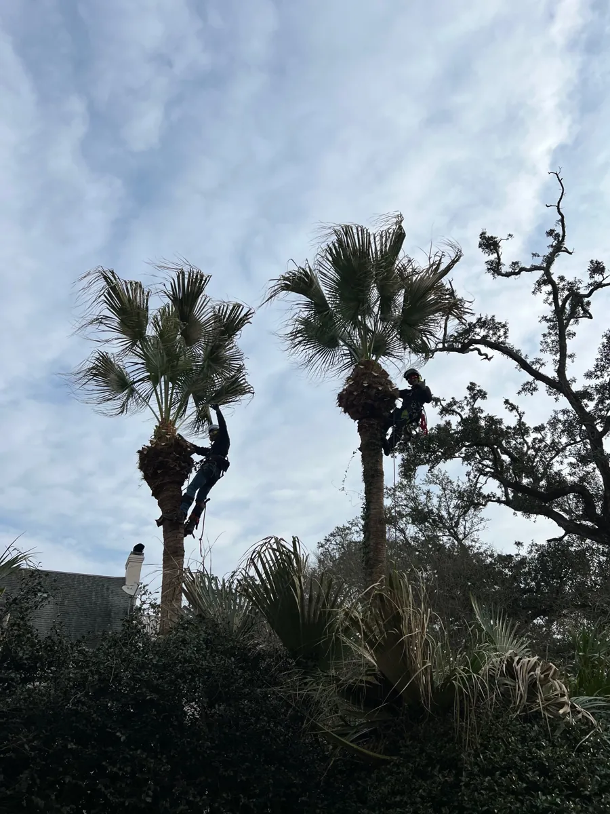
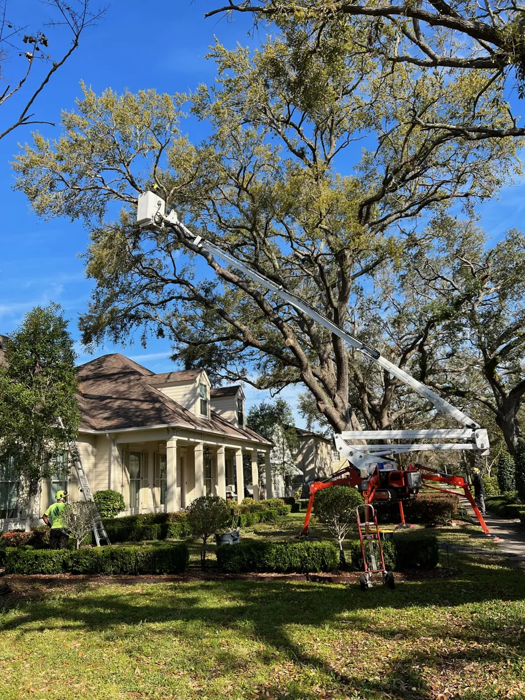
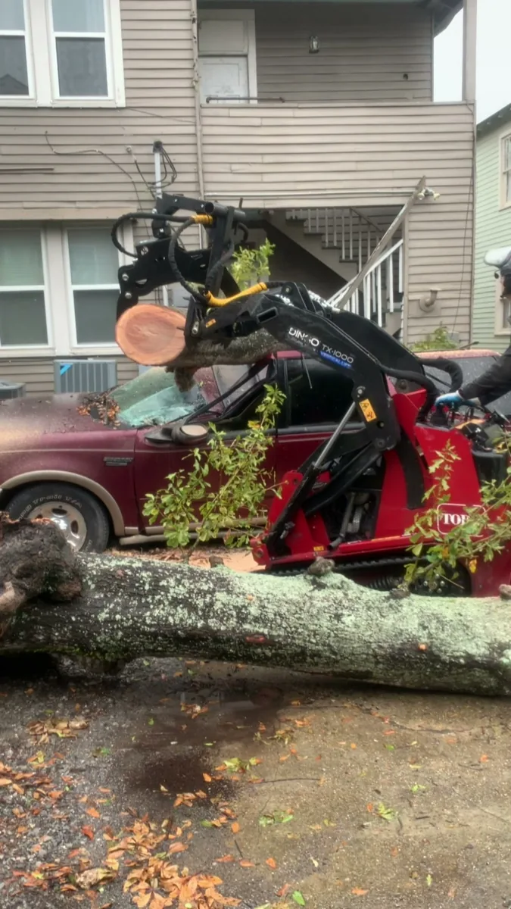

Tree Preservation Services in Greater New Orleans
Contact us today for an estimate on our Tree Preservation Services in NOLA!
Urgent or unsafe?Call an Arborist: (504) 732-0779


Essential Practices for Effective Tree Preservation and Care
Preserving trees is not very complicated if you understand how they function and what they need to grow. Trees are living organisms that respond to what is done to them and to the environment that they occupy. To stay healthy and vigorous, trees need air, water, and soil nutrients.
They need pollution-free and compaction-free soil that allows unhampered movement of water and air. Trees also need protection from insects, disease, and physical damage. Trees have roots, bark, a trunk, branches, and foliage, and they will thrive only if these organs remain healthy and undamaged.
Roots are essential to tree health. They support tremendous weight, store food, and take up water and nutrients from the soil. Tree roots need to be well anchored into a soil to hold the tree safely erect.
Although the large, woody roots that sup-port the weight of a tree and resist strong winds may reach deep into the soil, most roots that absorb water and nutrients can be found in the upper 12 to 18 inches of the soil. Roots are not confined to the area beneath a tree canopy, in fact, some roots can grow to more than three times the spread of the tree’s branches.
Bark serves as a living barrier to insects, disease, and water loss, and as a transport system. On the inner side of the bark is the cambium, a single layer of cells that produce a new layer of xylem (wood) and phloem (bark) each year.
Together, the xylem and phloem make up the circulatory system of the tree. Water and soil nutrients move upward in the wood, while manufactured food (carbohydrate or sugar) and growth substances (such as hormones) move downward and outward in the phloem.
A tree trunk provides height to the canopy of the tree, space for storing food materials, and support for the branches and leaves.
Tree limbs, branches, and twigs support leaves, where most of a tree’s food is produced in a process called photosynthesis. The green chloroplast cells in a tree’s leaves combine carbon dioxide, water, and radiant energy absorbed from the sun to produce oxygen and carbohydrates. Through the process of respiration, living cells in buds, leaves, roots, and other structures consume oxygen and convert the carbohydrates into other chemicals and energy the plant can use for growth, reproduction, and defense against decay.
The production, or use, of energy in a tree is affected by a number of factors, including temperature, the amount of stored and available carbohydrates, the concentration of oxygen and carbon dioxide in the air, the amount of water in tree tissues, light levels, and whether the tree is injured.
Tree injuries increase the rate of respiration and the use of stored carbohydrates. Repeated depletion of stored carbohydrates because of injury can threaten the tree’s health at the time of injury and in the future.
Wounds that penetrate through the bark into the wood enable insects and fungi that cause decay or diseases to pass through the outer defenses of the tree. There is a misconception that trees are able to “heal their wounds.” A tree does not heal, or fill, a wound. Instead, it defends against decay and discoloration by compartmentalizing the wound.
Compartmentalization of decay in trees is a process that protects the unwounded part of a tree from decay through the development of physical and chemical boundaries that resist the spread of disease into the surrounding wood.
If a tree is damaged by equipment or workers, it can be marred for life or killed. Wounds and pockets of decay do not fill but are compartmentalized and covered by wound wood. As a result, pockets of decay never disappear, even if they are covered by new wood. Some trees decline slowly over a number of years because of construction injuries, while others may die quickly.
During construction, trees can be damaged by soil compaction, grade changes, root crushing and pruning, damage to the bark, improper pruning of branches, incorrect storage of construction materials, and dumping of construction wastes.

Contact A Perfect Cut Tree for Tree Preservation in Greater New Orleans
If you care about the environment and want to ensure that your trees remain healthy and strong, then look no further than A Perfect Cut Tree’s tree preservation services. Our team uses the latest techniques and tools to preserve the beauty and health of your trees, helping them thrive for years to come.
Don’t wait until it’s too late, contact A Perfect Cut Tree today to learn more about how our tree preservation services can benefit you and your property. Trust us to take care of your trees because, at A Perfect Cut Tree, we are committed to providing the best tree care services possible.
More on Tree Preservation

Overcoming Tree Preservation Challenges, Expert Tips
The Importance Of Community Involvement In Tree Preservation
Importance Of Tree Preservation
Tree Preservation Laws and Regulations: A Complete Guide
Innovative Techniques for Preserving Trees and Their EcosystemsWhat to Photograph From a Safe Distance
Photos and video show us the tree, the property around it, how we would reach it, and any visible hazards.


Tree down or a broken limb?
Skip the photos and call. Calls are answered 24/7.
(504) 732-0779Office hours: Monday to Friday 7 AM to 5 PM, Saturday 7 AM to 3 PM, closed Sunday.
Other Tree Care Services

Tree Trimming
Our tree trimming service enhances tree health, improves curb appeal, and reduces risk by removing dead or overgrown branches with precision and care.
Get My Arborist Review
Emergency Tree Removal and Cleanup
When storm damage or a fallen tree puts your property at risk, our crew handles safe removal and thorough cleanup.
Get My Arborist Review
Tree & Shrub Pruning
We trim trees and shrubs to promote healthy growth, improve appearance, and reduce the risk of damage from overgrown limbs.
Get My Arborist Review
Ready to Show Us Your Tree?
Show us the tree. An arborist reviews what you send. Photos give us a first look. Some trees need an in-person visit before we can make a final recommendation.